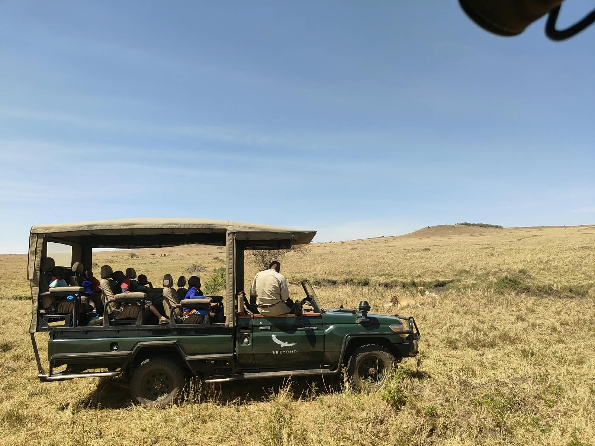

Why vehicles?
Tracking vehicle emissions is crucial for understanding the environmental impact of our operations and identifying opportunities for reduction.
CARBON TRACKER / VEHICLES
Distance-based carbon accounting for Wild Impact’s owned fleet of vehicles and petrol motorcycles.

Record distance, the correct vehicle variant, and fuel consumption to estimate direct operational emissions.
Tracking vehicle emissions is crucial for understanding the environmental impact of our operations and identifying opportunities for reduction.
We calculate vehicle emissions to identify vehicles that have the highest environmental impact from our fleet and compare them over time. Identifying vehicles with high emissions can aid us in managing vehicles and deciding which vehicles should run long distances and which should run short distances within our South African landscapes.
For the combustion vehicles and motorcycles owned, manufacturer fuel economy as well as the distance travelled are used to calculate the operational emissions. The calculation is based on the formula:
Estimated Litres used = Distance travelled × fleet-reported L/100 km ÷ 100
The litres are then multiplied by the UK DESNZ 2026 average-biofuel-blend factors to calculate the operational emissions.
Results are indicative operational emissions, not measured fuel use, lifecycle footprints or audited reporting. Fuel CO₂ and fuel CO₂e are reported separately; grid emissions are provided as CO₂e. Categories A–E are internal, relative per-km bands, not official environmental grades.
Loading the owned-fleet model catalogue…
PRIVATE FLEET REGISTER
Model specifications are included in the tracker, but asset IDs, registration numbers, and any annual insurance premiums are not published with the site. To identify the actual vehicle used, import the original fleet CSV on this device. The file is processed in your browser and its records remain in local storage.
No private fleet has been imported on this device.
MODEL SETTINGS
Changes follow you between Vehicles and Vehicle Guide in this browser.
Price currency: ZAR.
Fuel factors are fixed to the UK DESNZ 2026 average-biofuel-blend profile: petrol 2.06107 kg CO₂/L (2.075 kg CO₂e/L) and diesel 2.55035 kg CO₂/L (2.58354 kg CO₂e/L). They are not interchangeable with electricity's CO₂e factor. Selecting a different country clears old prices to avoid mixing currencies.
CARBON ACCOUNTING
SUMMARY STATISTICS
Totals reflect saved journeys on this device, including edited records.
Emissions are estimates based on fleet-reported fuel consumption and the factors saved with each journey. Total emissions are reported as CO₂e, not CO₂ alone.
REPORTING FIGURES
Only saved vehicle journeys are included. Hover over chart marks for details.
Stacked monthly totals · kg CO₂e · most recent 12 months (scroll sideways to read months)
Each point is one journey · coloured by body type
Distance-weighted kg CO₂e per 100 km
LOCAL RECORDS
| Date / Driver | Vehicle / Registration | Landscape / Body type | Distance | Operational CO₂e | Actions |
|---|